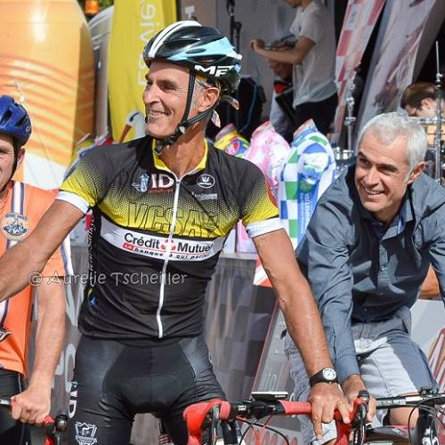
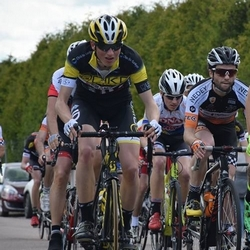
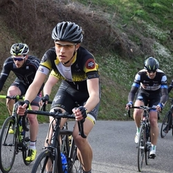
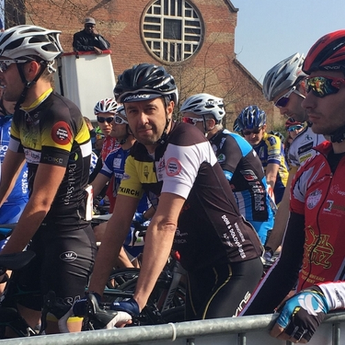
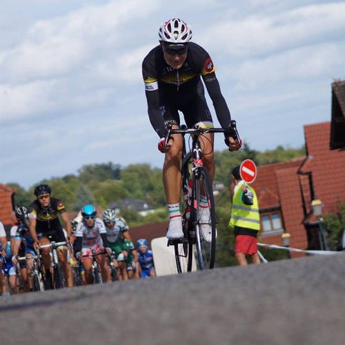
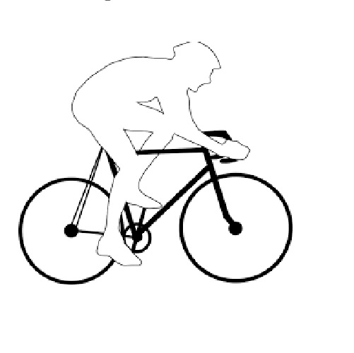
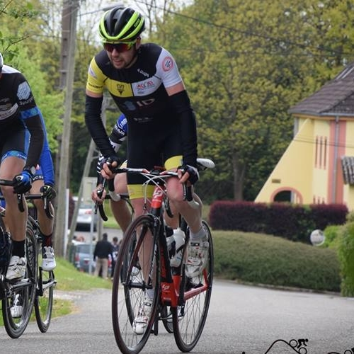
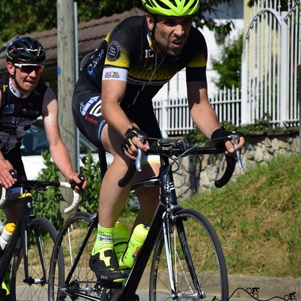

|  |  |
 |  |
| Alain L. Pass' D1 |
Antoine M. Pass' D1 |
Brieuc H. Pass' D1 |
Cédric L. 3ème caté |
 |
 |
 |
 |
| Cédric M. S4 (FSGT) |
Claude S. Pass' D3 |
Daniel F. 3ème caté |
Eric H. 3ème caté |
 |
 |
 |
 |
| Florian K. 3ème caté |
Florian V. Pass' D1 |
Guillaume A. Pass' D1 |
Guillaume P. Pass' D1 |
 |
 |  |
 |
| Jérome H. Junior |
Jerome J. Pass' D1 |
Johann V. Cadet |
José L. 3ème caté |
 |
 |
 |  |
| Julien B. 3ème caté |
Jerome G. 3ème caté |
Kevin E. 3ème caté |
Lionel B. V4 (FSGT) |
|  |  |
 |  |
| Lucien H. S4 (FSGT) |
Ludovic K. 2ème caté |
Mathieu N. 3ème caté |
Pascal S. V4 (FSGT) |
 |
 |
 |
 |
| Philippe W. 3ème caté |
René S. Pass' D2 |
Lucien H. 3ème caté |
Sebastien B. Pass' D3 |
 |
 |
|
|
| StéphaneM. V4(FSGT) |
Alexandre N. Minime |
Anthony W. Cadet |
Clément B. Cadet |
Un grand merci à Aurélie Tscheiller, Au Fil des Instants et Tiiffanie , photo vélo pour les photos.